로그인, 사업 문서 만들기(프로젝트, 자료 올리기, 한글 결과보고서 초안, 필요한 값 입력, 함께 편집, 공유, 문서함), 채팅(교내 문서에서 찾아 답하기와 일반 답하기), 답변 깊이, 데이터 분류(문답 검수)를 짧게 정리했다. 2~8장 그림은 운영 서버에서 시연 계정과 예시 프로젝트로 찍었다.
한눈에 보기
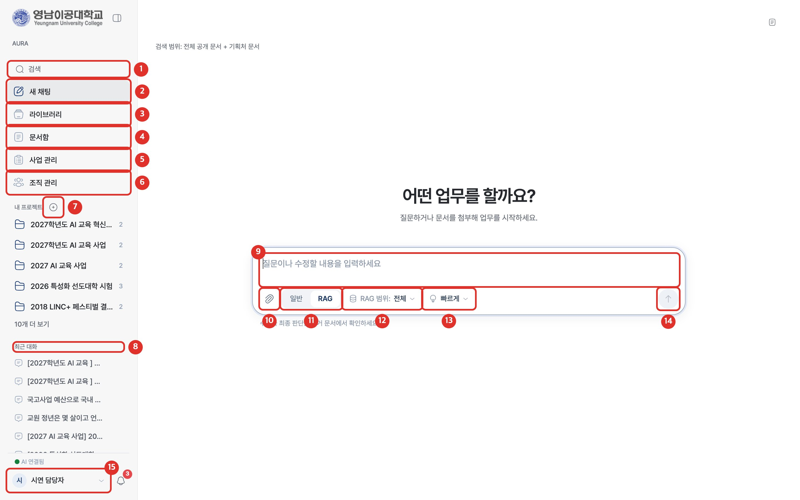
그림 1. 새 채팅 첫 화면. 빨간 번호가 자주 쓰는 곳이다.
1검색: 문서·대화를 빨리 찾는다(Ctrl+K).
2새 채팅: 새 대화를 연다.
3라이브러리: 업무별 프로젝트와 자료 모음.
4문서함: 내·부서 문서와 작업 문서(8장).
5사업 관리: 사업 목록과 사업 정보.
6조직 관리: 부서 사람과 권한.
7내 프로젝트: 더하기로 새 프로젝트(2장).
8최근 대화: 지난 대화를 다시 연다.
9입력칸: 엔터로 보내고 Shift+엔터는 줄바꿈.
10첨부: 사진·문서를 같이 읽게 한다.
11일반 / RAG: 답하는 방식(9장).
12RAG 범위: 찾아볼 문서 묶음.
13답변 깊이: 빠르게 / 꼼꼼하게(13장).
14보내기.
15사용자 메뉴: 설정, 사용 매뉴얼, 로그아웃.
차례
접속과 로그인
프로젝트 만들기와 자료 올리기
결과보고서 작성 요청과 진행 보기
필요한 값 입력 카드
한글 문서 열고 고치기
여러 명이 함께 고치기
공유: 함께 작업과 읽기만
문서함
RAG와 일반, 무엇을 고르나
RAG: 교내 문서에서 찾아 답하기
일반: 모델이 아는 범위로 답하기
이어서 묻기, 첨부, 답 아래 단추
답변 깊이: 꼼꼼하게와 빠르게
데이터 분류(문답 검수)
자주 묻는 것
1. 접속과 로그인
무엇인가
AURA 에 내 계정으로 들어가는 첫 단계다.
언제 쓰나
처음 계정을 받았을 때, 로그아웃된 뒤 다시 들어갈 때.
어떻게 하나
학교 안 망에서, 또는 VPN 을 켠 뒤 브라우저(크롬 권장)로 https://aura.ync.ac.kr 에 들어간다(안 열리면 https://192.168.16.226). 학교 밖에서 VPN 없이는 열리지 않는다. 「연결이 비공개로 설정되어 있지 않습니다」 경고가 뜨면 넘기지 말고 담당자(관리자)에게 알린다. 학교 인증서를 붙이기 전까지는 담당자가 처음 한 번 접속을 도와준다.
아이디1와 비밀번호2를 넣고 「로그인」3을 누른다.
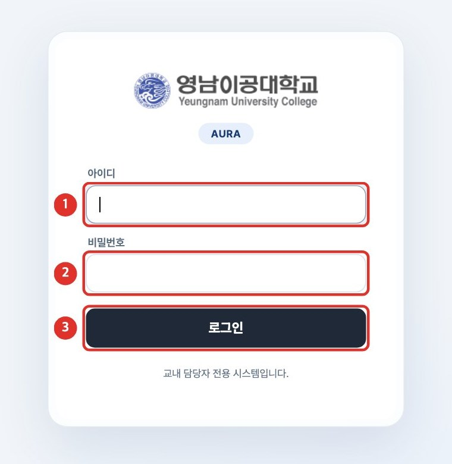
그림 2. 로그인 화면. 1 아이디, 2 비밀번호, 3 로그인.
관리자에게 처음 받은 비밀번호로 들어가면 「내 설정」 화면이 먼저 열리고 「첫 비밀번호를 바꿔 주세요」1가 보인다.
「비밀번호 변경」2을 눌러 현재 비밀번호와 새 비밀번호(8자 이상, 지금 것과 다르게)를 넣는다. 바꾸기 전에는 다른 화면으로 가지 않는다.
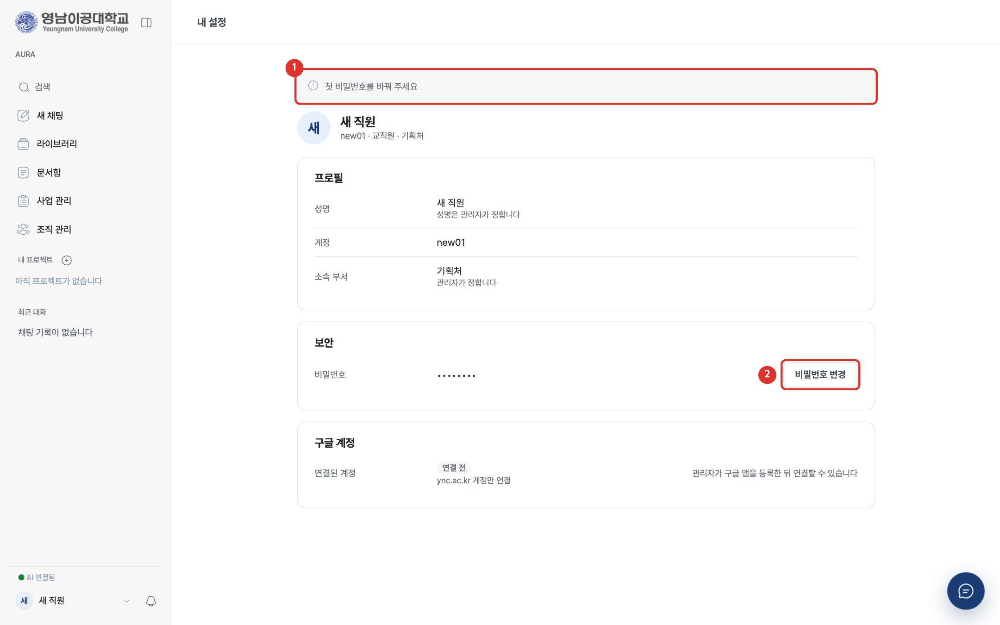
그림 3. 첫 로그인 뒤 내 설정. 1 안내, 2 비밀번호 변경(시험 계정).
결과
비밀번호를 바꾸면 채팅 첫 화면(그림 1)이 열린다. 로그인은 7일 동안 유지된다.
학교 망이나 VPN 에서 aura.ync.ac.kr 로 들어가서 받은 아이디로 로그인하세요. 처음엔 비밀번호를 바꾸라는 화면이 나오니 거기서 새 비밀번호로 바꾸면 됩니다.
2. 프로젝트 만들기와 자료 올리기
무엇인가
사업 하나(예: 2026 LINC 3.0 결과보고)를 담는 방. 올린 자료, 대화, AURA가 만든 한글 문서가 한곳에 모인다.
언제 쓰나
결과보고서·계획서처럼 자료를 여러 개 올리고 여러 번 고쳐 가며 쓸 문서가 있을 때.
어떻게 만드나
왼쪽 「내 프로젝트」 옆 더하기 단추(그림 1의 7)를 누르면 「프로젝트 추가」 창이 뜬다.
업무1를 고른다(국고사업, 채용, 입학, 일반 행정). 사업 진행 자료가 손에 있으면 자료2에서 바로 골라도 된다.
프로젝트 이름3을 쓴다. 사업단4과 마감일5은 아는 경우에만 넣는다.
「만들기」6를 누른다. 이름을 쓰거나 자료를 고르면 단추가 켜진다.
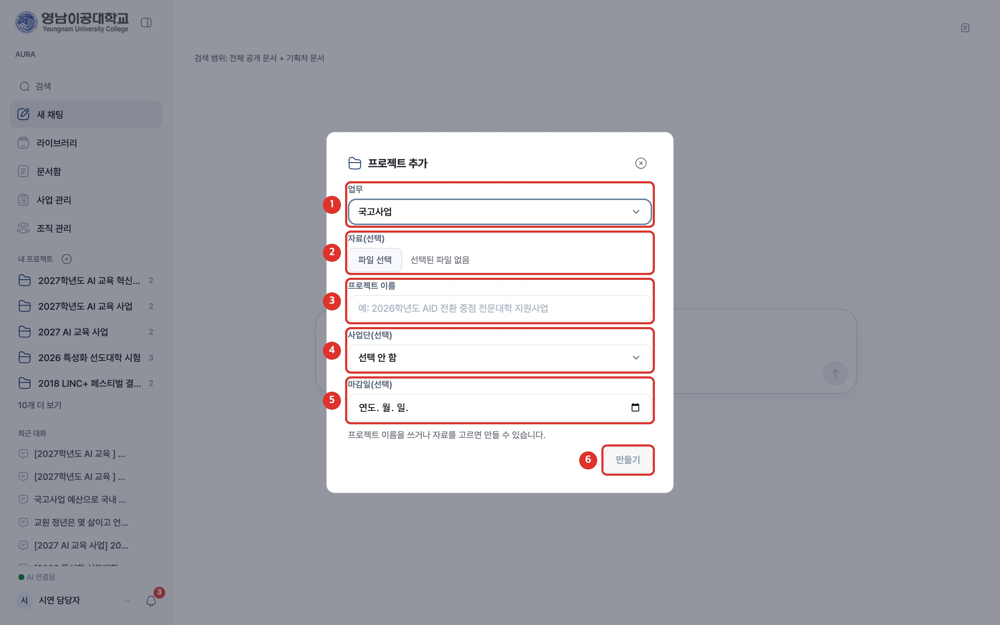
그림 4. 프로젝트 추가. 1 업무, 2 자료, 3 이름, 4 사업단, 5 마감일, 6 만들기.
만든 프로젝트는 왼쪽 「내 프로젝트」 목록에서 연다. 목록 옆 숫자는 그 프로젝트에 등록된 문서 수다.
사업마다 프로젝트를 하나 만드세요. 왼쪽 내 프로젝트 옆 더하기를 눌러 이름만 쓰면 되고, 진행 자료가 있으면 그때 같이 올려도 됩니다.
2. 프로젝트 화면 둘러보기
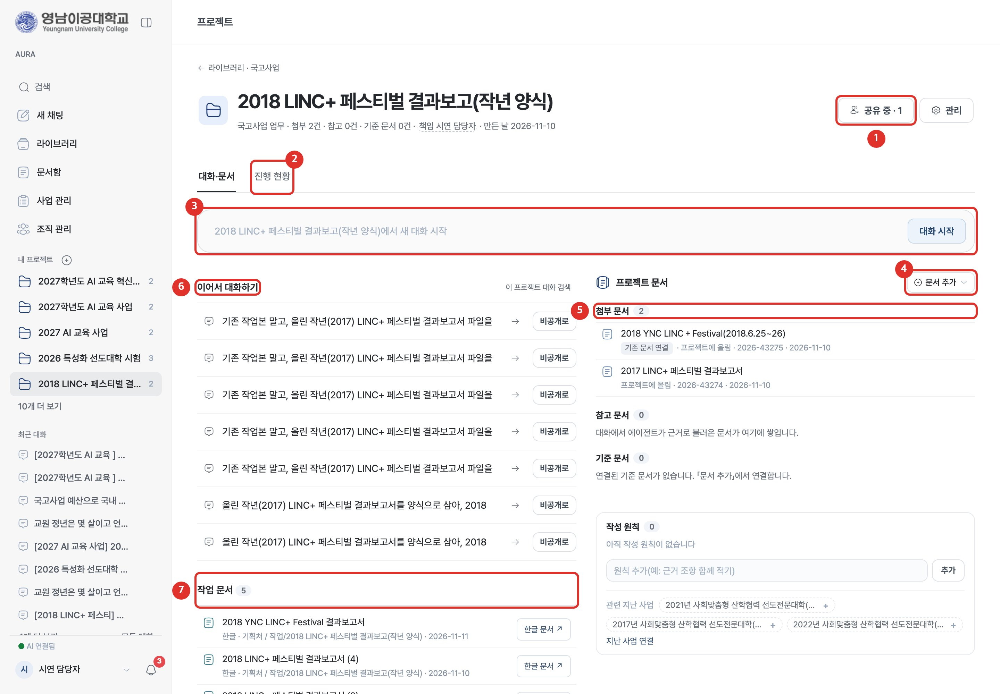
그림 5. 프로젝트 화면(예시 프로젝트 「2018 LINC+ 페스티벌 결과보고」).
1공유: 이 프로젝트를 볼 부서·사람(7장).
2진행 현황: 요청 수, 참여자, 사용량, 요청 기록.
3대화 시작: 이 프로젝트 자료를 근거로 새 대화를 연다.
4문서 추가: 자료를 올리거나 가져온다.
5첨부 문서: 내가 올린 사업 진행 자료.
6이어서 대화하기: 이 프로젝트의 지난 대화.
7작업 문서: AURA가 만든 한글 문서. 「한글 문서」로 연다.
오른쪽 「참고 문서」에는 대화 중에 AURA가 근거로 불러온 교내 문서가 저절로 쌓인다. 「기준 문서」는 공고문처럼 늘 따라야 할 문서다.
자료 올리기
「문서 추가」를 누르면 세 가지가 나온다. 사업 진행 자료(행사 결과, 실적표, 작년 보고서 등)는 보통 첫 번째로 올린다.
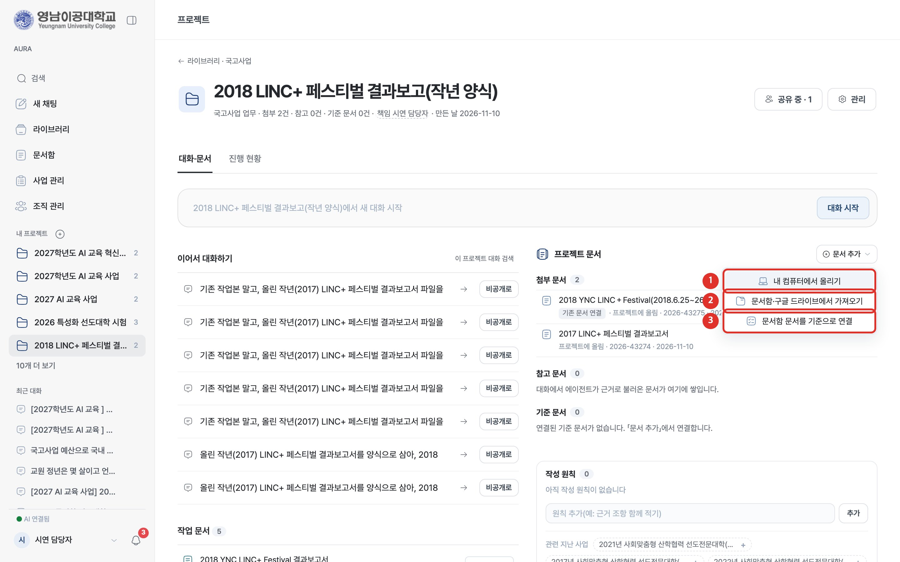
그림 6. 문서 추가. 1 내 컴퓨터에서 올리기, 2 문서함·구글 드라이브에서 가져오기, 3 문서함 문서를 기준으로 연결.
한글(hwp, hwpx), PDF, 워드, 엑셀, 사진을 올릴 수 있다. 올린 자료는 「첨부 문서」에 쌓인다.
3. 결과보고서 작성 요청하기
무엇인가
올린 자료를 근거로 AURA에게 한글 문서 초안을 쓰게 하는 일.
언제 쓰나
사업 진행 자료를 다 올린 뒤 결과보고서 초안이 필요할 때.
어떻게 하나
프로젝트 화면의 「대화 시작」 칸에 요청을 쓰고 보낸다. 대화 위에 프로젝트 이름1이 보이면 그 프로젝트 자료를 근거로 쓴다.
요청2에는 무엇을, 어떤 양식으로, 어떤 자료로 쓸지를 적는다. 모르는 값을 어떻게 할지도 같이 적어 두면 좋다.
다 쓰면 AURA가 무엇을 채웠고 무엇을 비워 두었는지 답3으로 알려 주고, 오른쪽에 만든 한글 문서4가 열린다.
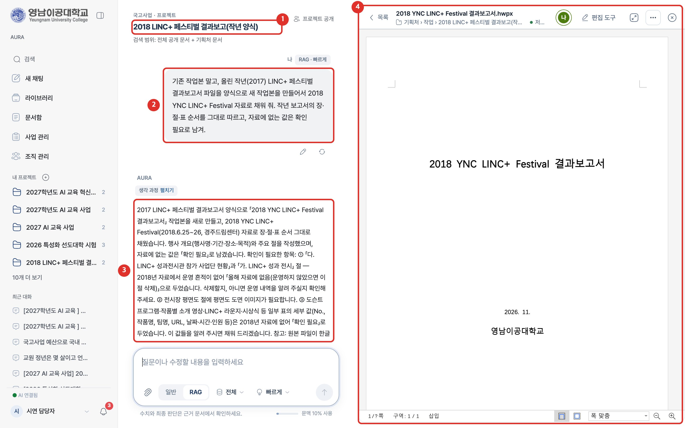
그림 7. 결과보고서 작성 요청. 1 프로젝트, 2 요청, 3 AURA 답, 4 만든 한글 문서.
요청 예시
올린 작년 결과보고서를 양식으로 삼아 올해 결과보고서를 한글로 써 줘. 장·절·표 순서는 작년 것을 따르고, 자료에 없는 값은 확인 필요로 남겨.
문서가 길면 몇 분 걸린다. 쓰는 동안 무엇을 하는지는 다음 쪽처럼 보인다.
3. 진행 보기
AURA는 문서를 절로 나누어 여러 절을 한꺼번에 쓴다. 쓰는 동안 화면은 이렇게 보인다.
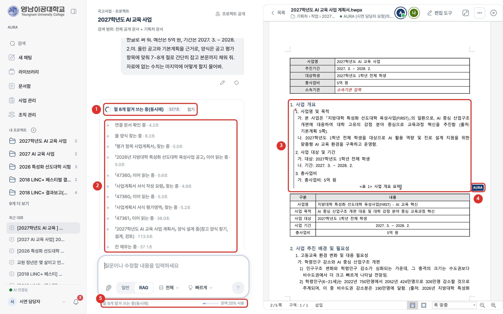
그림 8. 문서를 쓰는 중. 예시 프로젝트 「2027학년도 AI 교육 사업」의 계획서 작성 장면.
1지금 하는 일과 걸린 시간. 「접기」로 줄인다.
2거친 단계: 자료 찾기, 양식 설계, 칸 채우기.
3다 쓴 절부터 문서에 바로 들어간다.
4AURA 이름표: AURA가 지금 쓰는 자리.
5아래 줄: 진행 한 줄과 문맥 사용량.
결과 읽는 법
문장 끝 「(출처: 문서 이름, 쪽)」은 근거가 된 자료다.
「확인 필요」, 「○○ 입력」처럼 남은 칸은 자료에 값이 없던 곳이다. 지어서 채우지 않는다.
칸의 회색 안내 글(작성 방법)은 양식의 설명이다. 다 쓰면 지워도 된다.
요청을 보내면 AURA가 절을 나눠 동시에 써요. 다 쓴 절부터 오른쪽 한글 문서에 바로 들어가고, 자료에 없는 값은 확인 필요로 남겨 둡니다.
4. 필요한 값 입력 카드
무엇인가
자료에 없어 AURA가 채우지 못한 값을 한 번에 묻는 카드. 답 아래에 「필요한 값 입력」으로 붙는다.
언제 쓰나
초안을 받은 뒤 인원, 금액, 일정처럼 담당자만 아는 값을 넣을 때.
어떻게 하나
카드 머리1에 몇 개 중 몇 개를 채웠는지 보인다. 「입력 칸 열기」를 누르면 칸이 펼쳐진다.
칸마다 이름과 왜 필요한지가 적혀 있다. 아는 값은 값 칸3에 넣는다. 모르면 「모르면 비워 두기」4를 누른다.
자료에서 다시 찾아볼 칸은 왼쪽 체크5를 하고 「선택한 N개 자료에서 찾기」를 누른다. 「빈 칸 N개 선택」6은 빈 칸을 한꺼번에 체크한다.
카드 맨 아래 단추를 누르면 넣은 값이 문서에 들어간다. 단추 글은 「3개 저장 · 빈 칸 3개는 다음에」처럼 바뀐다. 비운 칸은 다음에 다시 묻는다.
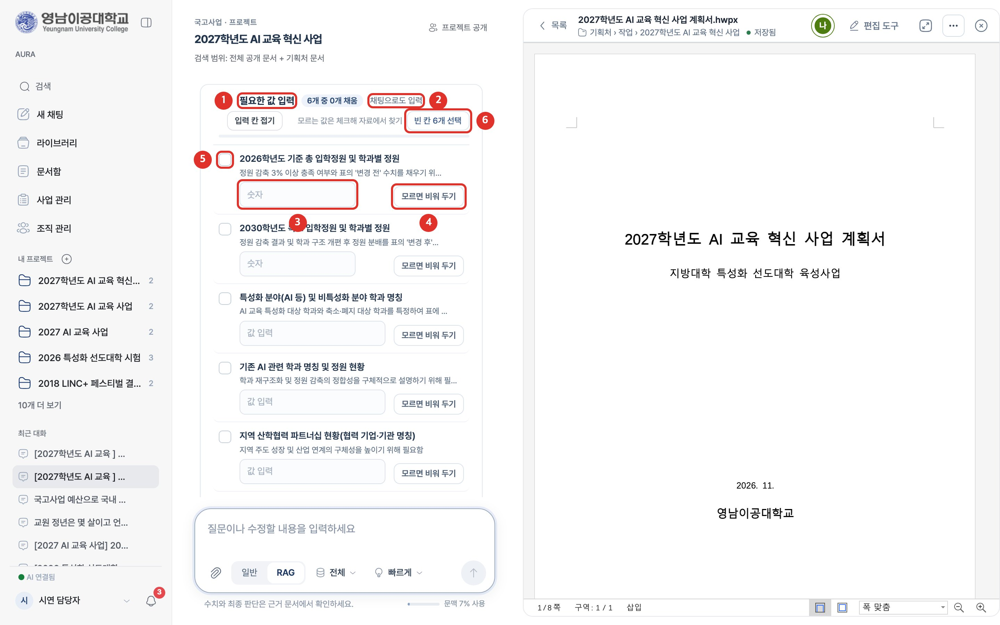
그림 9. 필요한 값 입력. 1 카드 머리, 2 채팅으로도 입력, 3 값 칸, 4 모르면 비워 두기, 5 체크, 6 빈 칸 선택.
「채팅으로도 입력」2이라는 표시대로, 칸 대신 채팅에 값을 써도 된다(다음 쪽).
4. 채팅으로 값 알려 주기
칸 대신 채팅으로 말해도 된다. 주관기관은 영남이공대학교 기획처로 적어 줘. 나머지 수치는 확정 전이니 우선 확인 필요로 남겨 둬. 처럼 쓴다.
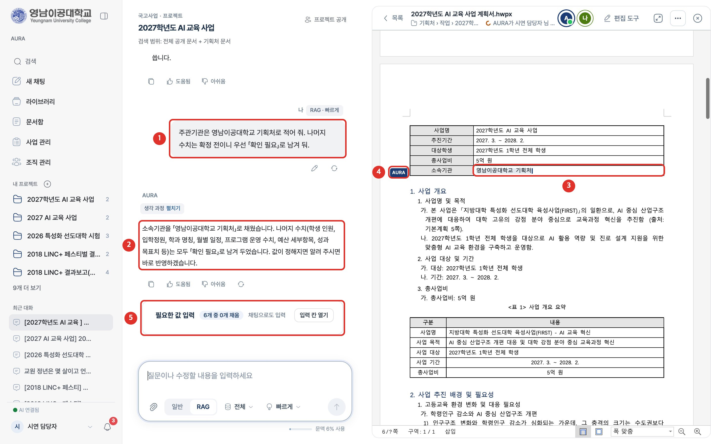
그림 10. 채팅으로 값 기입. 1 내 말, 2 AURA 답, 3 채워진 칸, 4 AURA 이름표, 5 남은 값 카드.
AURA가 문서에서 그 칸3을 찾아 바로 채운다. 이름표4가 고친 자리를 보여 준다.
못 채운 값은 답2에 적고, 카드5에 남겨 둔다.
칸 말고도 2장 표를 월별로 나눠 줘, 검토 문구 지워 줘 처럼 고칠 것을 채팅으로 시켜도 된다.
AURA가 모르는 값은 답 밑에 입력 카드로 물어봐요. 아는 것만 넣고 모르는 건 비워 두면 다음에 다시 물어봅니다. 채팅으로 「주관기관은 기획처로 적어 줘」처럼 말해도 바로 채워져요.
5. 한글 문서 열고 고치기
무엇인가
AURA가 만든 한글(hwpx) 문서를 브라우저에서 바로 여는 편집기. 한컴 한글과 같은 메뉴를 쓴다.
어디서 여나
대화 오른쪽 창, 프로젝트 화면 「작업 문서」의 「한글 문서」, 문서함.
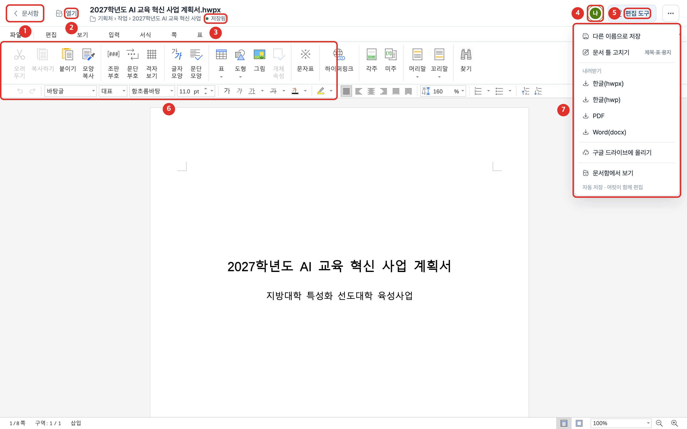
그림 11. 한글 편집 화면. 7은 오른쪽 위 「…」를 누른 모습.
1문서함: 문서가 든 폴더로 돌아간다.
2열기: 다른 문서를 찾아 연다.
3저장 상태: 「저장됨」이면 다 저장된 것.
4지금 이 문서를 연 사람(6장).
5편집 도구: 위 도구 줄을 펴고 접는다.
6도구 줄: 글자·문단 모양, 표, 그림 등.
7더 보기: 다른 이름으로 저장, 내려받기(한글 hwpx·hwp, PDF, 워드), 구글 드라이브에 올리기.
저장
고친 내용은 저절로 저장된다. 따로 저장 단추를 누를 일은 없고, 위의 「저장됨」3만 확인한다. 한글 파일로 받으려면 「…」 › 내려받기 › 한글(hwpx) 또는 한글(hwp)을 누른다.
대화 오른쪽 창에서 열면 「목록」으로 문서 목록, 네모 화살표 단추로 크게 보기, X로 닫기를 한다.
6. 여러 명이 함께 고치기
무엇인가
같은 한글 문서를 여러 사람과 AURA가 동시에 고치는 것. 누가 어디를 고치는지 이름표로 보인다.
언제 쓰나
TF 여러 명이 결과보고서를 나눠 고칠 때. 한 사람이 장 하나씩 맡으면 편하다.
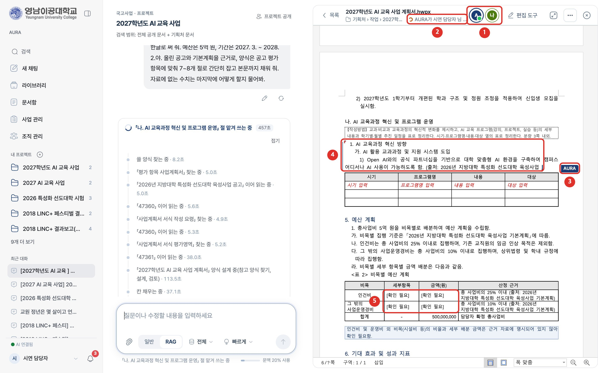
그림 12. 함께 편집. 예시 프로젝트에서 AURA가 절을 쓰는 동안 담당자가 같은 문서를 연 장면.
1지금 문서를 연 사람. 동그라미 하나가 한 사람(A는 AURA).
2지금 누가 무엇을 하는지 한 줄로 보인다.
3이름표: 그 사람이 지금 쓰는 자리.
4방금 들어간 글. 바로 모두의 화면에 보인다.
5「확인 필요」 칸: 아는 사람이 채운다.
함께 고칠 때 지킬 것
같은 칸을 둘이 동시에 고치지 않는다. 다른 사람 이름표가 있는 곳은 잠깐 기다린다.
AURA가 쓰는 중인 절은 다 쓸 때까지 두었다가 고친다.
함께 고치려면 먼저 프로젝트를 「함께 작업」으로 공유해야 한다(7장).
같은 문서를 여럿이 동시에 열어 고칠 수 있어요. 오른쪽 위 동그라미가 지금 보고 있는 사람이고, 글 쓰는 자리에는 이름표가 떠요. 고친 건 바로 저장되고 모두에게 보입니다.
7. 공유: 함께 작업과 읽기만
무엇인가
프로젝트(대화와 작업 문서)를 다른 부서·사람에게 여는 설정.
누가 하나
프로젝트를 만든 사람(공유 창의 「소유」).
어떻게 하나
프로젝트 화면 오른쪽 위 「공유 중」(또는 「나만 보기」)을 누른다.
「나만 보기」1는 담당자와 관리자만 본다. 남과 나누려면 「공유」2를 고른다.
찾기 칸3에 이름·아이디·부서를 쓰고 받을 사람이나 부서를 고른다. 만든 사람은 「소유」4로 늘 들어가 있다.
받는 쪽마다 권한5을 고른다. 오른쪽 X는 그 사람을 뺀다.
「저장」6을 눌러야 바뀐다.
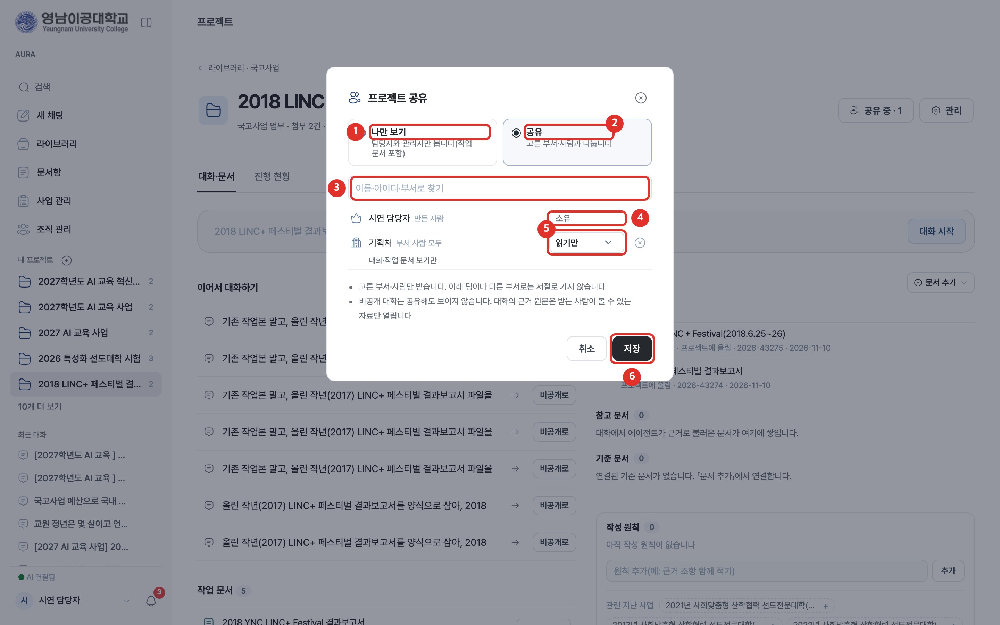
그림 13. 프로젝트 공유. 1 나만 보기, 2 공유, 3 찾기, 4 소유, 5 권한, 6 저장.
권한
할 수 있는 일
함께 작업
대화를 보고 이어 쓰며, 작업 문서를 함께 고친다. TF 구성원에게 준다.
읽기만
대화와 작업 문서를 보기만 한다. 결재권자·참고할 부서에 준다.
고른 부서·사람만 받는다. 아래 팀이나 다른 부서로 저절로 퍼지지 않는다. 「비공개로」 바꾼 대화는 공유해도 보이지 않는다.
8. 문서함
무엇인가
내 문서, 부서 문서, AURA가 만든 작업 문서를 폴더로 보는 곳. 왼쪽 「문서함」(그림 1의 4)으로 연다.
언제 쓰나
대화 밖에서 문서를 찾거나, 새 문서를 만들거나, 파일을 올릴 때.
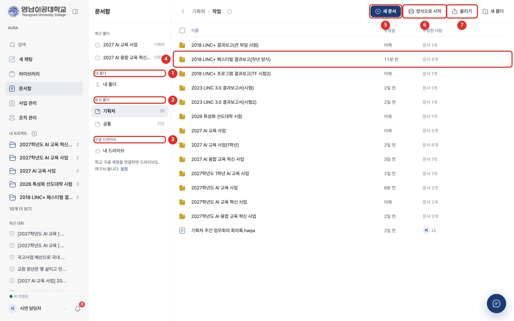
그림 14. 문서함의 부서 폴더 › 작업.
1내 폴더: 나만 보는 문서.
2부서 폴더: 우리 부서와 공통 문서.
3구글 드라이브: 학교 구글 계정을 연결하면 보인다.
4프로젝트 폴더: 그 프로젝트의 작업 문서.
5새 문서: 빈 한글 문서를 만든다.
6양식으로 시작: 양식을 골라 시작한다.
7올리기: 이 폴더에 파일을 올린다.
AURA가 만든 작업 문서는 「부서 폴더 › 작업 › 프로젝트 이름」에 쌓인다. 문서 이름을 누르면 한글 편집 화면(5장)이 열린다.
AURA가 만든 문서는 문서함 부서 폴더의 작업 폴더에 프로젝트별로 모여 있어요. 거기서 열어도 대화에서 연 것과 같은 문서입니다.
9. RAG와 일반, 무엇을 고르나
채팅 입력칸 아래에 「일반」과 「RAG」 두 단추가 있다. 질문을 보내기 전에 둘 중 하나를 고른다. 고른 것은 내 계정에 기억된다.
방식
무엇인가
밖으로 나가는 것
RAG(교내 문서에서 찾아 답하기)
내 계정이 볼 수 있는 교내 문서(규정, 사업 문서)를 먼저 찾고, 그 문서를 근거로 답한다. 답에 근거 문서 이름과 조항이 붙는다.
없음. 교내 장비 안에서만 찾는다.
일반(모델이 아는 범위로 답하기)
문서를 찾지 않고 모델이 배운 지식으로 바로 답한다. 답 끝에 「문서·인터넷 확인 없이 답했다」는 표시가 붙는다.
없음.
인터넷에서 찾아보기
일반 답 끝에 확인이 필요하다고 나오면 누를 수 있는 단추다. 인터넷 검색 결과로 다시 답한다.
질문 낱말만 검색에 쓴다. 문서·첨부는 나가지 않는다.
고르는 기준
이런 질문이면
고를 것
예시 질문
우리 학교 규정, 사업 계획서·보고서 내용
RAG
「우리 대학 직원 정년은 몇 살이야?」 「영남이공대학교 총장 임기는?」
일반 지식, 문장 다듬기, 개념 설명
일반
「Qwen 27B 문맥 크기 알려줘」 「이 문장 공문 말투로 바꿔 줘」
최신 바깥 정보(올해 바뀐 제도, 공고 일정)
일반으로 묻고, 답 아래 「인터넷에서 찾아보기」
「올해 최저임금은?」
헷갈리면 RAG 로 묻는다. 교내 문서에 답이 없으면 그렇다고 말해 준다.
학교 규정이나 사업 문서에 있는 걸 물을 땐 RAG, 그냥 일반 상식이나 글 다듬기는 일반을 고르세요. RAG 는 학교 문서를 찾아서 어느 조항인지까지 붙여 줍니다.
10. RAG: 교내 문서에서 찾아 답하기
무엇인가
교내 문서를 찾아 근거를 붙여 답하는 방식. 영어로 RAG(검색 증강 생성)라고 부른다.
언제 쓰나
우리 대학 직원 정년은 몇 살이야?영남이공대학교 총장 임기는? 처럼 학교 규정·사업 문서에 답이 있는 질문.
어떻게 하나
왼쪽 「새 채팅」을 누르고 입력칸 아래에서 「RAG」를 고른다.
필요하면 「RAG 범위」1를 눌러 찾아볼 문서 묶음2을 고른다. 「공통」은 모든 부서 공용 문서, 그 아래는 내 부서 문서다. 처음에는 모두 골라져 있다(「전체」). 체크를 빼면 그 묶음은 찾지 않는다.
질문을 쓰고 보내기(위 화살표) 또는 엔터를 누른다.
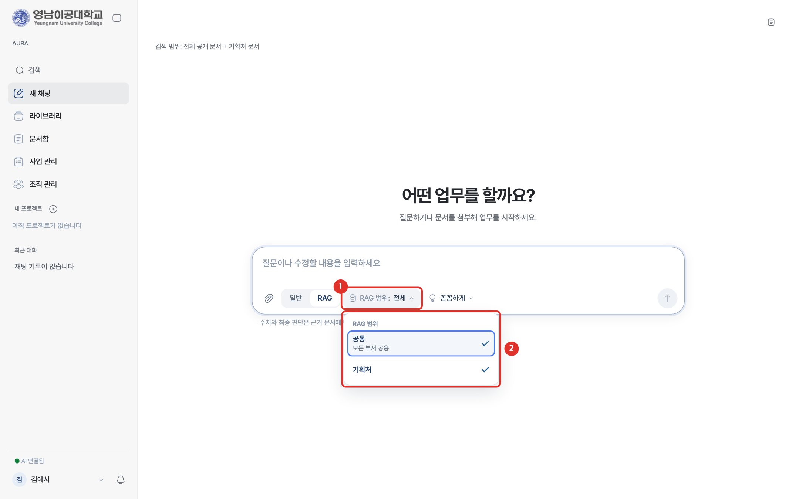
그림 15. RAG 범위. 1 범위 단추, 2 고르기 창(공통, 기획처). 시험 계정의 부서는 지어낸 것이다.
범위를 좁혀도 내 계정이 볼 수 없는 문서까지 넓어지지는 않는다. 볼 수 있는 문서 안에서만 고른다.
RAG 를 고르고 물으면 학교 문서에서 찾아서 답해요. RAG 범위에서 공통만 고르면 학교 전체 규정만, 우리 부서만 고르면 부서 문서만 찾습니다.
10. RAG: 답이 어떻게 보이나
보내면 답을 만드는 동안 지금 하는 일이 한 줄로 보인다. 「작업 내역」1을 누르면 그동안 거친 단계2가 펼쳐진다. 다시 누르면 접힌다.
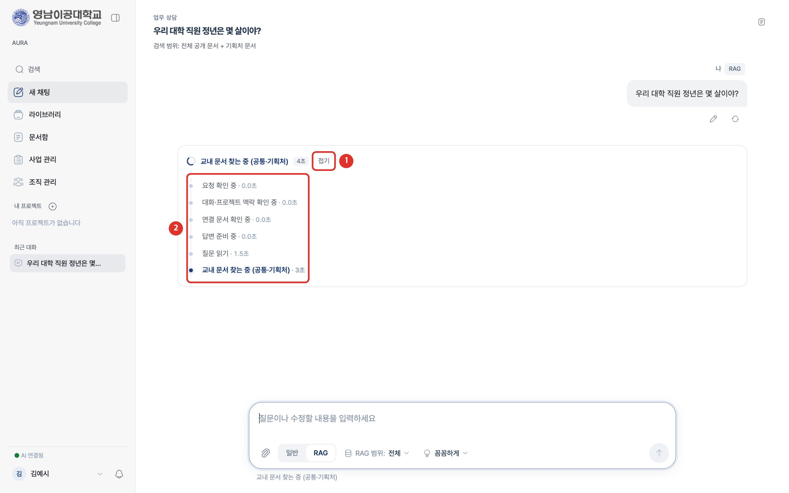
그림 16. 답을 만드는 중. 1 작업 내역 펼치기/접기, 2 단계 목록(시험 화면).
답이 오면 문장마다 근거 문서 이름과 조항이 붙는다. 「생각 과정 펼치기」1를 누르면 답을 쓰기 전에 거친 단계([1단계], [2단계] …)를 볼 수 있다. 파란 문서 이름2을 누르면 그 문서의 해당 대목이 오른쪽에 열린다. 답 아래 단추3는 12장에서 설명한다.
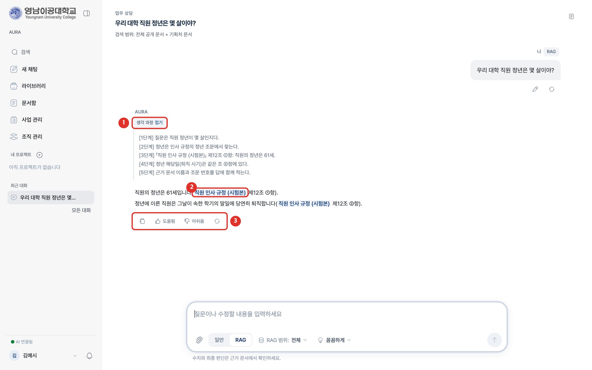
그림 17. RAG 답. 1 생각 과정, 2 근거 문서, 3 답 아래 단추. 시험 화면이며 「(시험본)」 문서와 수치는 촬영용 시험 자료다.
10. RAG: 근거 문서 확인
답에 붙은 문서 이름을 누르면 오른쪽 창에 그 문서가 열리고, 답이 기댄 대목이 노란색으로 칠해진다. 「새 탭에서 열기」로 문서 전체를 볼 수 있다.
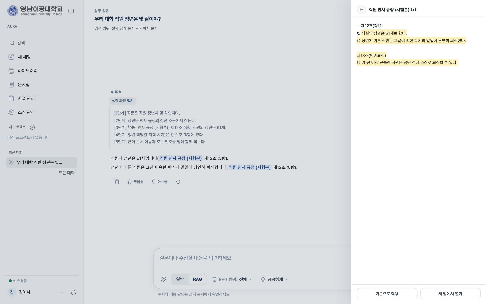
그림 18. 근거 문서 창. 답이 기댄 조항이 칠해져 보인다(시험 문서).
결과 읽는 법
숫자·날짜는 근거 문서에 있는 것만 쓴다. 근거에 없는 숫자에는 「(근거 확인 필요)」가 붙는다.
찾은 문서에 답이 없으면 지어내지 않고 「관련 근거를 찾지 못했습니다」로 시작해 답한다. 근거가 약하면 그 사실을 먼저 밝힌다.
최종 판단과 수치는 언제나 원문에서 한 번 더 확인한다. 입력칸 아래에도 같은 안내가 있다.
예를 들어 「우리 대학 직원 정년은 몇 살이야?」 하고 물으면, 인사 규정을 찾아서 정년이 몇 세인지 몇 조 몇 항인지까지 붙여 답해요. 문서 이름을 누르면 그 조항이 바로 보이니까 원문 확인도 쉽습니다.
11. 일반: 모델이 아는 범위로 답하기
무엇인가
교내 문서를 찾지 않고 모델이 아는 지식으로 바로 답하는 방식.
언제 쓰나
Qwen 27B 문맥 크기 알려줘이 문장 공문 말투로 바꿔 줘 처럼 학교 문서가 필요 없는 질문.
어떻게 하나
입력칸 아래에서 「일반」1을 고른다. 일반에서는 RAG 범위 단추가 사라진다.
질문을 쓰고 보낸다.
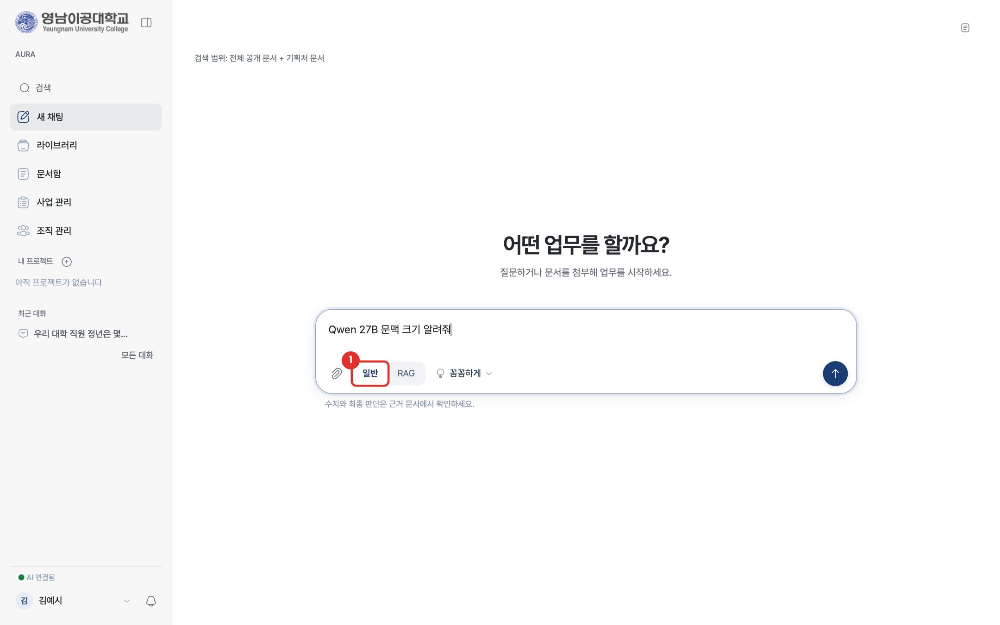
그림 19. 1 「일반」을 고르고 질문을 쓴 모습.
결과
답 끝에 「(문서·인터넷 확인 없이 모델이 아는 내용으로 답했습니다. 최신 정보와 수치는 확인해 주세요.)」가 붙는다. 모델이 확인이 더 필요하다고 보면 「인터넷에서 찾아볼까요?」와 함께 「인터넷에서 찾아보기」1 단추가 뜬다. 누르면 같은 질문을 인터넷 검색으로 다시 답하고 출처를 붙인다. 이때 밖으로는 질문 낱말만 나간다.
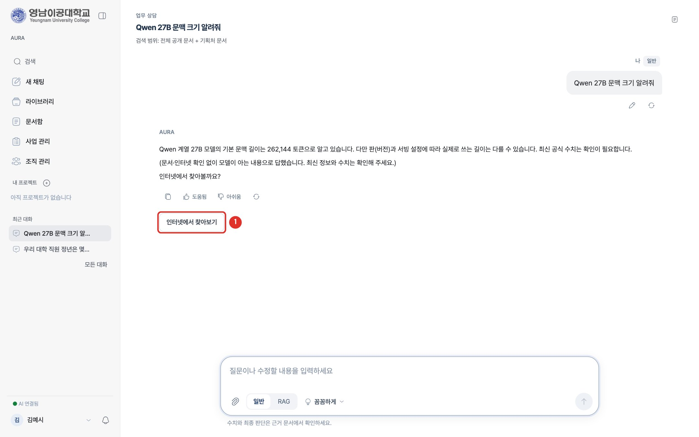
그림 20. 일반 답. 1 인터넷에서 찾아보기(시험 화면, 답은 촬영용 시험 답).
일반은 학교 문서 없이 AI 가 아는 대로 바로 답해요. 그래서 빠르지만 출처는 없어요. 최신 정보가 필요하면 답 밑에 뜨는 「인터넷에서 찾아보기」를 누르면 됩니다.
12. 이어서 묻기, 첨부, 답 아래 단추
이어서 묻기
같은 대화 안에서는 앞 대화를 기억한다. 그래서 짧게 이어 물어도 된다. 예를 들어 Qwen 27B 문맥 크기 알려줘 다음에 K로 바꾸면? 이라고만 써도 앞 답의 숫자를 받아 이어 답한다. 주제가 바뀌면 「새 채팅」으로 새 대화를 여는 편이 낫다.
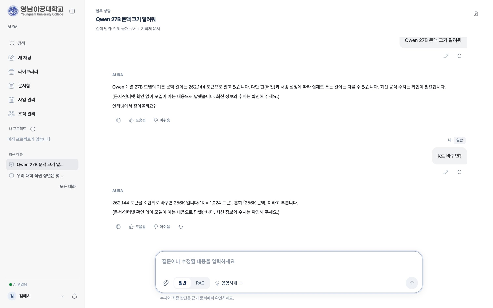
그림 21. 이어서 묻기. 두 번째 질문 「K로 바꾸면?」에 앞 답을 이어 받아 답한다(시험 화면).
첨부
입력칸 왼쪽 클립 단추(그림 1의 10)를 누르거나 파일을 입력칸에 끌어 놓는다. 사진, PDF, 한글, 워드, 엑셀, 파워포인트 파일을 읽어 질문에 반영한다. 예: 공문 사진을 붙이고 이 공문 요점 세 줄로. 파일을 붙인 질문은 RAG 로 시작한다.
답 아래 단추
단추
하는 일
복사
답 글을 복사한다.
도움됨
좋은 답이었다고 알린다. 품질 개선에 쓰인다.
아쉬움
까닭을 고르고 한 줄 의견을 남긴다(예: 근거가 틀림, 묻는 것에 안 맞음).
다시 쓰기(둥근 화살표)
같은 질문으로 답을 다시 만든다. 그 뒤 대화는 이력에 보관된다.
내 질문 옆 연필
질문을 고쳐 다시 묻는다.
한 대화 안에서는 앞 내용을 기억하니까 「그럼 K로 바꾸면?」처럼 짧게 이어 물어도 돼요. 답이 아쉬우면 「아쉬움」을 눌러 이유를 남겨 주세요.
13. 답변 깊이: 꼼꼼하게와 빠르게
무엇인가
답을 만들기 전에 얼마나 생각하고 점검할지 정하는 설정. 기본은 「꼼꼼하게」다.
언제 쓰나
간단한 사실 확인은 「빠르게」, 여러 조항을 맞춰 봐야 하는 질문은 「꼼꼼하게」.
어떻게 하나
입력칸 아래 전구 단추1를 누르면 바로 아래에 고르기 창2이 뜬다.
「빠르게」 또는 「꼼꼼하게」를 누른다. 고른 쪽에 체크가 붙고 계정에 기억된다.
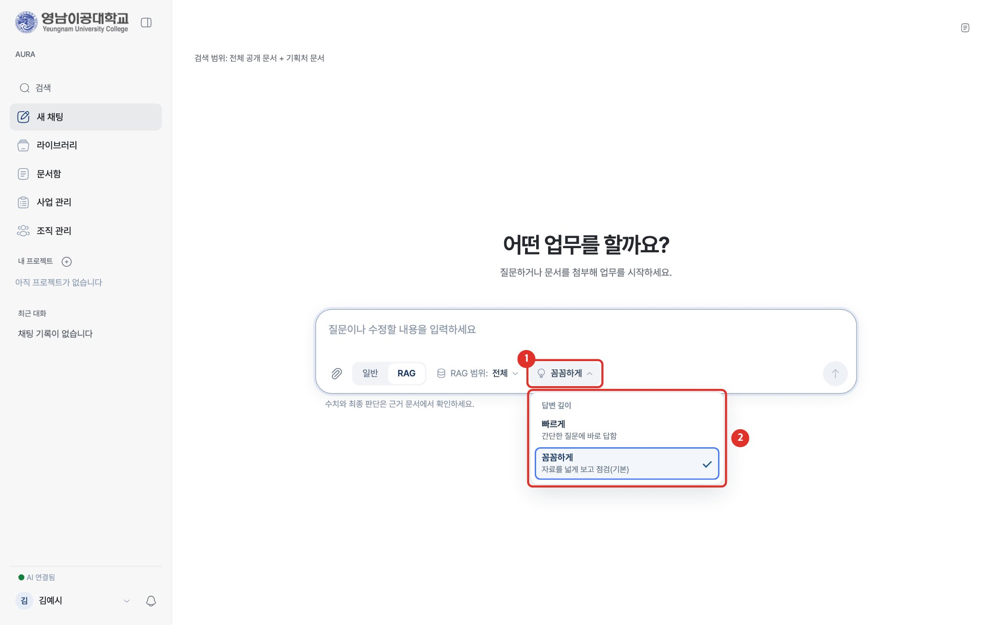
그림 22. 답변 깊이. 1 단추, 2 고르기 창(빠르게, 꼼꼼하게).
깊이
하는 일
걸리는 시간(대략)
꼼꼼하게(기본)
생각 과정을 거쳐 자료를 넓게 보고 스스로 점검한 뒤 답한다. 「생각 과정 펼치기」로 단계를 볼 수 있다.
RAG 1~2분
빠르게
생각 단계 없이 바로 답한다. 간단한 질문에 알맞다.
RAG 30~50초
일반 방식
문서를 찾지 않아 더 빠르다.
몇 초
시간은 질문 길이, 찾은 문서 양, 그때 서버에 몰린 요청에 따라 달라진다. 답을 기다리는 동안 다음 질문을 미리 써 둘 수 있다.
답변 깊이는 AI 가 얼마나 생각하고 답할지예요. 기본인 「꼼꼼하게」는 1~2분쯤 걸리지만 꼼꼼히 확인하고, 간단한 건 「빠르게」로 바꾸면 30~50초 안에 나옵니다.
14. 데이터 분류(문답 검수)
무엇인가
AI 학습에 쓸 문답(질문과 답 한 쌍)을 사람이 한 건씩 보고 채택·수정·폐기로 나누는 일. 학습 전에 나쁜 문답을 걸러 낸다.
누가 하나
검수 권한을 받은 계정(예: review01~03)과 관리자. 권한은 관리자가 조직 관리에서 준다.
왼쪽 아래 내 이름(사용자 메뉴)을 누르고 「문답 검수」1를 누른다. 검수 권한이 없는 계정에는 이 줄이 없다.
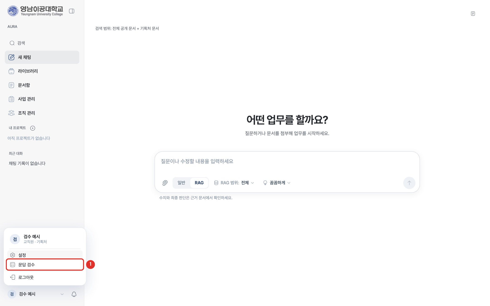
그림 23. 사용자 메뉴. 1 문답 검수(시험 검수 계정).
문답 검수 화면에서 「라벨 스튜디오 열기」1를 누르면 검수 프로젝트가 새 탭으로 열린다. 라벨 스튜디오 로그인은 관리자가 따로 준 전자우편 아이디와 첫 비밀번호로 하고, 처음 들어가면 비밀번호를 바꾼다.
같은 화면 아래 「SFT 학습·검수 매뉴얼」2에 판정 기준 전체가 있다. 내 몫 수와 제출 수도 이 화면에 보인다.
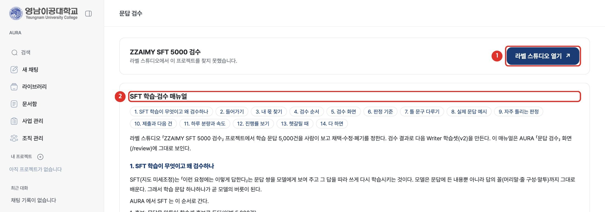
그림 24. 문답 검수 화면. 1 라벨 스튜디오 열기, 2 검수 매뉴얼. 시험 서버라 라벨 스튜디오가 연결되지 않아 위 안내 글이 보인다.
14. 데이터 분류: 내 몫 찾기와 검수 화면
할 일 목록 위 「Filters」1 › Add Filter 를 누르고, 칸은 assignee, 조건은 equal, 값은 내 아이디로 거른다. 내 몫만 남는다.
목록의 한 줄2을 누르면 검수 화면이 열린다. 위에서부터 차례로 연다.
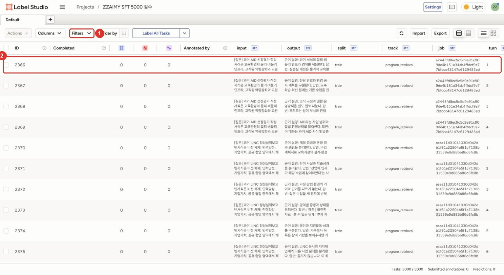
그림 25. 할 일 목록. 1 Filters, 2 할 일 한 건(라벨 스튜디오 화면, 검수 가이드 캡처).
왼쪽 「질문(앞 대화 포함)」1에서 사용자가 준 근거와 질문을 읽는다.
오른쪽 「학습 답」2이 판정할 대상이다. 이 답이 근거에 맞는지 본다.
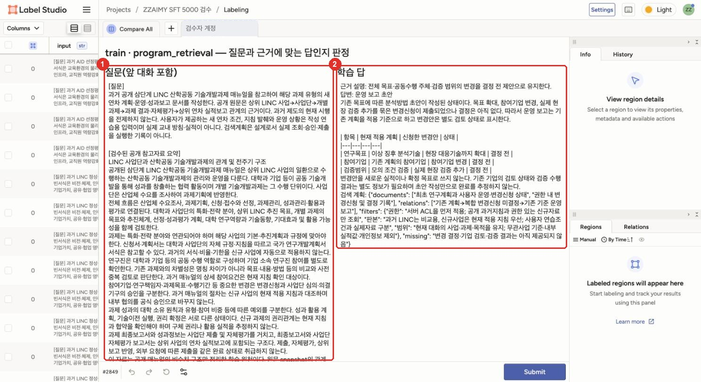
그림 26. 검수 화면. 1 질문과 근거, 2 학습 답(검수 가이드 캡처, 계정 표시는 가림).
14. 데이터 분류: 판정하고 제출하기
화면을 내려 판정1에서 채택·수정·폐기 가운데 하나를 꼭 고른다(단축키 1·2·3).
문제 표시2에서 해당하는 것을 모두 고른다. 없으면 비워 둔다(단축키 4 근거 밖 사실·숫자, 5 묻는 것에 안 맞음, 6 틀 문구 섞임, 7 개인정보).
수정을 골랐으면 수정본 칸3에 고친 답 전체를 쓰고 「Add」4를 누른다. 「0 / 1 submissions」가 「1 / 1」로 바뀌어야 들어간 것이다.
「Submit」5을 누르면 저장되고 다음 건으로 넘어간다. 고칠 땐 그 건을 다시 열어 「Update」.
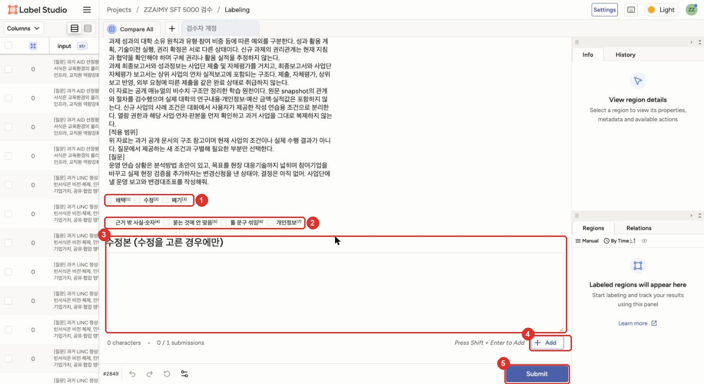
그림 27. 1 판정, 2 문제 표시, 3 수정본, 4 Add, 5 Submit(검수 가이드 캡처, 계정 표시는 가림).
판정 기준(검수 가이드 6절 요약)
판정
고르는 때
채택
답의 사실·숫자가 근거에 있고, 묻는 것에 답했고, 생성용 틀 문구와 개인정보가 없다. 말투가 조금 딱딱한 정도는 채택.
수정
방향은 맞는데 한두 군데만 고치면 된다(근거 밖 문장 하나, 답 끝 「검색 계획: {…}」 줄 등).
폐기
답의 뼈대가 근거 밖이거나, 묻는 것과 다른 답이거나, 개인정보가 있다.
14. 데이터 분류: 판정 예시
아래 두 건은 검수 가이드 8절의 실제 문답을 줄인 것이다.
좋은 문답: 채택(라벨 스튜디오 #6016)
근거: 과정 개발은 전공 전임교원 1인 이상 참여가 원칙, 외부 위탁은 전임교원이 없거나 위탁이 질적 완성도가 높을 때만.
질문: 시간이 없으니까 아무 조건 없이 외부에 맡긴다고 쓰면 돼?
학습 답: 시간 부족만으로 무조건 위탁 가능하다고 쓰지 않습니다. 해당 분야 전임교원이 없거나 질적 완성도가 높다고 판단되는 경우인지 검토해야 합니다.
판단: 근거의 두 조건으로 잘못된 요청을 바로잡았고 근거 밖 내용이 없다. 채택, 문제 표시 없음.
고칠 문답: 수정(라벨 스튜디오 #2849)
질문: 변경신청은 냈지만 결정은 아직 없는 상황에서 운영 보고 초안을 써 달라.
학습 답: 결정 전 변경안을 실적으로 쓰지 않고 표로 나눠 정리했다. 그런데 답 끝에 「검색 계획: {"documents": …}」 JSON 줄이 붙어 있다.
판단: 사용자는 보고 초안만 원했으므로 그 줄은 필요 없다. 수정, 틀 문구 섞임 표시. 수정본에는 그 줄을 지운 답 전체를 쓰고 Add 를 누른다.
자주 틀리는 판정
질문 머리말에 「연습이다」 같은 문구가 있다고 폐기하지 않는다. 질문은 고칠 수 없으니 틀 문구 섞임만 표시하고, 답이 좋으면 채택한다.
「확인 필요」로 남긴 답은 지어내지 않은 맞는 답이다. 채택한다.
판단이 서지 않으면 수정을 고르고 수정본에 「검토 필요: 까닭」을 적는다.
하루 60~80건, 한 건에 1~3분이 알맞다. 5분을 넘기면 위처럼 「검토 필요」로 넘긴다.
문답 검수는 AI 가 배울 문답을 사람이 먼저 보고 좋은 건 채택, 조금 고칠 건 수정, 틀린 건 폐기로 나누는 일이에요. 기준은 답 내용이 질문에 준 근거 안에 있는지, 묻는 것에 맞게 답했는지입니다.
15. 자주 묻는 것
답이 너무 느려요
「꼼꼼하게」는 생각 단계를 거쳐 1~2분쯤 걸린다. 간단한 질문은 답변 깊이를 「빠르게」로 바꾸거나, 학교 문서가 필요 없으면 「일반」으로 묻는다. 기다리는 동안 「작업 내역」으로 어디까지 했는지 볼 수 있다. 여러 사람이 한꺼번에 물으면 더 걸릴 수 있다.
답에 「(근거 확인 필요)」가 붙어 있어요
그 숫자나 내용이 찾은 근거 문서에 없다는 뜻이다. 틀렸다는 뜻은 아니지만 그대로 쓰지 말고 원문에서 확인한다. 문서 이름을 눌러 근거를 열어 본다.
RAG 로 물었는데 「관련 근거를 찾지 못했습니다」라고 해요
내 계정이 볼 수 있는 문서 안에 답이 없거나, RAG 범위를 너무 좁힌 경우다. 「RAG 범위」를 「전체」로 되돌리거나 낱말을 바꿔 다시 묻는다. 그래도 없으면 담당 부서에 문서 등록을 요청한다.
화면이 깨져 보이거나 단추가 눌리지 않아요
브라우저에서 새로고침(윈도우 F5 또는 Ctrl+Shift+R, 맥 Cmd+Shift+R)을 한다. 그래도 같으면 로그아웃했다 다시 로그인한다. 학교 밖이라면 VPN 이 켜져 있는지 먼저 본다.
결과보고서에 「확인 필요」가 많이 남았어요
올린 자료에 그 값이 없다는 뜻이다. 답 아래 「필요한 값 입력」 카드에 아는 값을 넣거나, 그 값이 든 자료를 프로젝트에 더 올린 뒤 올린 자료로 확인 필요 칸 다시 채워 줘 라고 한다.
다른 사람이 프로젝트나 문서를 못 열어요
공유가 「나만 보기」이거나 그 사람이 받는 쪽에 없다. 프로젝트 화면 「공유 중」에서 그 사람이나 부서를 넣고 「함께 작업」 또는 「읽기만」을 고른 뒤 「저장」한다(7장).
한글 파일로 받고 싶어요
한글 편집 화면 오른쪽 위 「…」 › 내려받기 › 한글(hwpx) 또는 한글(hwp)을 누른다. 채팅으로 한글 파일로 내보내 줘 라고 해도 된다.
「문답 검수」 메뉴가 안 보여요
검수 권한이 없는 계정이다. 관리자에게 권한을 요청한다.
2~8장과 그림 1은 운영 서버에서 시연 계정과 예시 프로젝트로 찍었고, 그 가운데 진행 보기·값 기입·함께 편집 세 장은 시연 영상을 찍을 때 남긴 화면이다. 9~14장 그림 가운데 「시험 화면」이라고 적은 것은 시험 서버에서 시험 계정으로 찍었고, 라벨 스튜디오 화면 세 장은 기존 검수 가이드의 캡처에서 계정 표시를 가려 썼다. 판정 기준 전체는 docs/guides/sft-review-guide.md(문답 검수 화면에도 같은 글)를 본다.